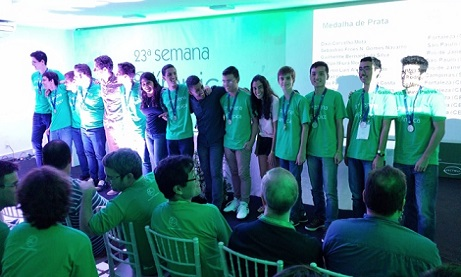

Olimpíada Brasileira de Matemática (OBM)
A OBM é uma realização da Associação Olimpíada Brasileira de Matemática (AOBM) em parceria com a Universidade Federal da Bahia (UFBA) e conta com o apoio da Sociedade Brasileira de Matemática (SBM), do Conselho Nacional de Desenvolvimento Científico e Tecnológico (CNPq), do Instituto de Matemática Pura e Aplicada (IMPA), da Academia Brasileira de Ciências (ABC) e do INCT-Mat. É atribuição da Comissão Nacional de Olimpíadas de Matemática da SBM a preparação das provas e soluções das provas da OBM, bem como definir critérios de correção e de premiação.
Como Funciona
Os requisitos de participação são:
Níveis 1, 2 e 3:
a) Os 300 alunos, de cada nível, com maior pontuação na OBMEP do ano anterior, totalizando 900 alunos. Empates na última pontuação serão considerados.
b) Todos os alunos ganhadores de medalha de ouro, prata ou bronze na OBM do ano anterior, desde que satisfaçam os critérios descritos no regulamento.
c) Todas as estudantes ganhadoras de medalha de ouro, prata, bronze, ou menção honrosa no Torneio Meninas na Matemática (TM²) do ano anterior, desde que satisfaçam os critérios descritos no regulamento oficial.
d) Todos os alunos ganhadores de medalha de ouro, prata, bronze, ou menção honrosa na Competição Jacob Palis Júnior de Matemática, desde que satisfaçam os critérios descritos no regulamento.
e) De três e dez estudantes, de cada nível, com melhor desempenho em cada Olimpíada Regional, apoiada pela OBM no ano da competição, que ainda não tenham sido contemplados pelos itens anteriores.
Esse grupo de alunos será convidado a participar da Fase Única da OBM. Não haverá inscrição de alunos por parte das escolas.
Nível Universitário:
a) Nível Universitário – estudantes universitários, que ainda não tenham concluído um curso superior. Em geral, graduandos, podendo ser estudantes de qualquer curso e qualquer semestre, ou aqueles que concluíram o Ensino Médio há menos de um ano e não tenham ingressado em curso de nível superior até a data de realização da prova da Competição Elon Lages Lima de Matemática que equivale à Primeira Fase do Nível Universitário.
Os melhores participantes são premiados com medalhas e certificados, e os medalhistas são convidados a uma cerimônia de premiação.
A nota final é composta por pontuações de todas as etapas, e a classificação final é determinada pela soma das notas obtidas.
Galeria
Medalhas
Premiação